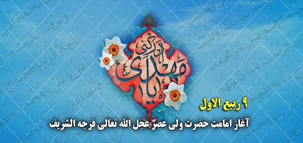
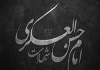
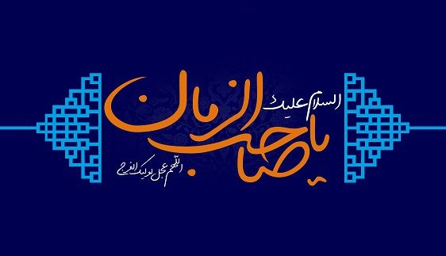

-
 ویژگی های جامعه منتظر ظهور منجی
ویژگی های جامعه منتظر ظهور منجی
بشر از روزی كه پا به عرصه گیتی نهاده در آرزوی یك زندگی اجتماعی خوش و سعادتبخش است، و در راه رسیدن به آن تلاش و كوشش میكند و همیشه از جان و دل خواستار یك عصر درخشان و اجتماع صالحی است كه ظلم و تعدّی در آن نباشد....
ادامه مطلب ... -
 امام ، پناه از شیطان
امام ، پناه از شیطان
یکی از مهم ترین شؤون امام علیه السّلام که تأمین کنندهی اساسی ترین نیاز ما به ایشان است، ملجأ و پناه بودن امام علیه السّلام است...
ادامه مطلب ... -
 عرصههای مشترک عامه و خاصه در موضوع مهدویّت
عرصههای مشترک عامه و خاصه در موضوع مهدویّت
یکی از موارد اتفاقی بین شیعه و اهل سنّت در قضیهی مهدویّت، اتفاق بر اصل آن است. امت اسلامی ـ به غیر از گروهی اندک از غربزدگان و روشنفکر نمایان مانند احمد امین مصری ـ بر این مسأله اتّفاق دارند که ...
ادامه مطلب ... -
 زن منتظر و منتظرپروری
زن منتظر و منتظرپروری
در طول تاریخ تشیع، یكی از نقشهای بیبدیل زنان، دفاع از ولایت و تلاش برای حفظ این ارزش الهی بوده است، به ویژه در عصر غیبت كه تقریباً امكان ایفای نقش مردان برای دفاع از ولایت، به سبب اختناق شدید، كمرنگ بوده است، زنان، فعالانه برای حفظ فرهنگ مهدویت در جامعه نقش آفرینی كردهاند...
ادامه مطلب ... -
 ما بی صاحب نیستیم !
ما بی صاحب نیستیم !
آقای شیخ حیدرعلی مدرس اصفهانی فرمود: « یکی از مواقعی که من به حضور مقدس حضرت بقیة الله ارواحنا فداه ( یا یکی از اصحابشان ) مشرف شدم و ایشان را نشناختم، سالی بود که اصفهان بسیار سرد شد و نزدیک پنجاه روز آفتاب دیده نمی شد و مدام برف می بارید. سرما بحدی شد که نهرهای جاری یخ بسته بود. ...
ادامه مطلب ...
|
پیوندهای روزانه
پنجشنبه 16 آبان 1398 :: نویسنده : بهانه بودن
نهم ربیع الاول هر سال هجری قمری، مصادف با آغاز امامت خورشید درخشانِ جهانِ بشریّت و مرواریدِ فروزانِ اهل بیت عصمت و طهارت علیهم السلام احیاگر معالمِ دین و نابود کننده ی ظلم و ستم و شوکتِ تجاوزکاران و برقرار کننده ی حکومت عدل در سرتاسر جهان و بزرگ منادی توحید و عدالت و وارث راستین پیـامبر اعـظم صلی الله علیه و آله و ائمـه معصـومین علیهم السلام حضرت حجت بن الحسن العسکری، مهدی موعود علیه السلام است. ضمن عرض تبریک به مناسبت این حادثه مهم و تاریخی، توجه خوانندگان عزیز را به نوشتاری کوتاه در باره ایشان، ویژگی های دوران غیبت، یاران آن حضرت و پدیده انقلاب اسلامی جلب می کنم: ۱ـ میلاد نور حضرت مهدی علیه السلام در نیمه ی ماه مبارک شعبان سال ۲۵۵ هـ. ق چشم به جهان گشودند.[1] پدر بزرگوارشان حضرت امام حسن عسکری علیه السلام و مادر گرامی آن حضرت، خانم نرجس[نرگس] خاتون می باشد. در شب ولادت آن بزرگوار، عمه امام عسکری علیه السلام جناب بانو حکیمه خاتون به دستور ایشان در منزل ماند. امام علیه السلام به حکیمه خاتون فرمودند: «امشب منتظر تولد فرزندی هستم از نرجس». حکیمه با تعجب پرسید، چطور ممکن است؟!(زیرا اثری از حمل در او ندیده بود). امام علیه السلام فرمود: «او بسان مادر موسی است که هیچ کس نمی دانست باردار است، زیرا فرعون شکم زنان حامله را پاره می کرد».  طبق نقل حکیمه، خداوند در آن شب فرزندی به امام عسکری علیه السلام عنایت کرد و چنین اراده فرموده بود که دشمنان، هرگز قدرت دسترسی به او را پیدا نکنند و چنین اراده کرده بود که او «وارث مستضعفان» در روی کره ی زمین بشود: «و نُرید أن نمنّ علی الذین استُضعفوا فی الأرض و نجعلهم ائمة ونجعلهم الوارثین».[2] طبق حکمت الهی در فاصله ی کوتاه سال ۲۵۵ تا ۲۶۰ هـجری، ایشان به طور مخفی زندگی می کردند و در خدمت پدر بزرگوارشان آماده ی احراز مقام امامت و رهبری مسلمانان و بر عهده گرفتن مسئولیت سنگین آنان بودند. با شهادت امام عسکری علیه السلام در سال ۲۶۰ هجری، دوران غیبت آغاز و مدت ۷۵ سال(غیبت صغری) حضرت مهدی علیه السلام در پنهانی زندگی می کردند و مردم بدان صورت که بتوانند حضوری خدمت ایشان مشرف و مشکلات خودشان را در میان بگذارند، امکان نداشت ولی دائماً از انوار و برکات مقدس او بهره مند می شدند. دسترسی مردم به واسطه نائبان خاص او از سال ۲۵۵ تا ۳۳۰ هـ. ق صورت می گرفت. ۲ـ راز غیبت فلسفه و راز حقیقی غیبت برای عموم مردم بیان نشده است و به غیر از اولیاء خاص الهی[پیامبران و امامان معصوم علیهم السلام] از آن اطلاع ندارند؛ ولی به طور کلی از میان ادله ی عقلی و نقلی می توان فوایدی را برای آن به دست آورد: ادامه مطلب... نوع مطلب : مناسبتها، چهارشنبه 15 آبان 1398 :: نویسنده : بهانه بودن
مردی از اهل قم گفت: روزی در مجلس احمد بن عبد الله بن خاقان که از طرف خلفاء والی اوقاف و صدقات در قم بود و نهایت عداوت نسبت به اهل بیت رسالت داشت، حاضر بودم، در مجلس او از سادات علوی که در سرّمن رأی بودند، صحبت به میان آمد. احمد بن عبد الله گفت من در سرّمن رأی از سادات علوی کسی را ندیدم در علم، زهد، ورع، وقار، مهابت، عفت و حیا شرف و قدر و منزلت در نزد خلفاء و اوامر مانند حسن بن علی عسکری(ع) باشد و سادات و سایر بنی هاشم او را مقدم می داشتند و همه بزرگ و کوچک تعظیم او می نمودند و همچنین وزراء و امراء و سایر فرماندهان سپاه و اصناف خلق در اعزار و اکرام او کوتاهی نمی کردند. من روزی در کنار پدرم روز دیوان ایستاده بودم که ناگاه دربانان و خدمتکاران دویدند به پدرم گفتند: ابن الرضا (ع) جلو در خانه ایستاده است، پدرم با صدای بلند گفت به او اجازه دهید و به مجلس درآورید، ناگاه دیدم جوانی گندم گون و گشاده چشم و خوش قامت و نیکو روی و خوش قیافه وارد شد و من در او مهابت و جلالتی مشاهده کردم، چون نظر پدرم بر او افتاد از جای برخاست و به استقبال او شتافت و من هرگز از پدرم ندیده بودم چنین کاری نسبت به کسی از بنی هاشم یا امراء و فرزندان آنان، بکند و چون به نزدیک او رسید دست در گردن او انداخت و دستهای او را بوسید و دست او را گرفت در جای خود نشاند و با ادب در خدمت او نشست و با او سخن می گفت و از روی تعظیم او را به کینه خطاب می نمود و جان خود و پدر و مادرش را فدای او می کرد. من از مشاهده این وضع تعجب می کردم، ناگاه دربانان آمدن موفق خلیفه را خبر دادند و قاعده چنان بود که هرگاه خلیفه به نزد پدرم می آمد اول گارد مخصوص او می آمدند و از نزدیک پدرم تا در دربار خلیفه دو صف می ایستادند تا آنکه خلیفه می آمد و بیرون می رفت باوجوداین که پدرم خبر آمدن خلیفه را شنید، ولی باز روی به او داشت و با او سخن می گفت تا آنکه غلامان مخصوص خلیفه پیدا شدند، پس گفت: فدای تو شوم اکنون اگر خواهی برخیز، غلامان خود را امر کرد که او را از پشت صف مردم ببرید که نظر مأمورین خلیفه بر آن حضرت نیفتد، باز پدرم برخاست او را تعظیم کرد و میان پیشانیش را بوسید و او را روانه کرد و سپس خلیفه رفت. من از دربانان و غلامان پدرم پرسیدم که این مرد چه کسی بود که پدرم اینقدر به او احترام واکرام نمود؟ گفتند: او مردی است از بزرگان عرب که حسن بن علی نام دارد و ابن الرضا معروف است. تعجب من زیاد گردید و در تمام آن روز در فکر و تحیر بودم، چون شب پدرم طبق عادتی که داشت بعد از نماز مغرب و عشا نشست و مشغول دیدن کاغذها و عرایض مردم شد که روز به اطلاع خلیفه برساند، من نزد او نشستم. پدرم از من پرسید که کاری داری؟گفتم: بلی اگر اجازه فرمائی سئوال کنم چون اجازه داد، گفتم ای پدر آن چه کسی بود که امروز تو در تعظیم و اکرام او مبالغه نمودی و جان خود و پدر و مادر خویش را فدای او کردی؟ گفت: پسرم، این امام رافضیان است. کمی ساکت شد و گفت: ای فرزند اگر خلافت از بنی عباس بدر رود، کسی از بنی هاشم بغیر از آن مرد شایسته آن نیست زیرا که اوبه جهت اتصافش به زهد و عبادت و فضل و علم و کمال و عفت نفس و شرافت نسب و علو حسب و سایر اوصاف پسندیده، سزاوار خلافت است. اگر پدر او را می دیدی او نیز در نهایت شرافت و جلالت و فضیلت و علم و فضل و کمال بود، احمد بن عبید الله می گوید: پس از شنیدن این سخنان پدرم، خشم من زیاد گردید و تفکر و تحیر من افزون شد، بعد از آن پیوسته از مردم حال او را تفحص می کردم و از وزرا و کتّاب و سادات و علویان و سایر مردم به غیر از تعریف و توصیف نشنیدم و همه او را به خاطر فضل و جلالت و علم و بزرگواریش بر بنی هاشم مقدم می داشتند و می گفتند: او امام رافضیان است. این بود قدر و منزلت او در نظر من عظیم شد و بلندی مقام او را دانستم زیرا که او دوست و دشمن به غیر از نیکی و بزرگی او چیزی نشنیدم. ادامه مطلب... نوع مطلب : مناسبتها، دوشنبه 27 خرداد 1398 :: نویسنده : بهانه بودن
صفات پسندیده و کمالات انسانی به دو صورت در
انسان پدید می آید: یکی از راه تلاش و کوشش و جدیت خود انسان و دیگری از
طریق وراثت و کمالاتی که در پدر و مادر و اجداد انسان وجود دارد. از این
رهگذر است که نقش مادر و کمالات وجودی او در پدید آوردن فرزندی با کمال و
شایسته کاملاً آشکار می گردد.
پیشوایان معصوم(ع) چون دارای رسالتی بس مهم و جهانی بودند، از پدران و مادران باکمال و برجسته که دارای ویژگیهای خاصی بودند، چشم به جهان گشودند. آنان سعی می کردند زنان شایسته ای را برای خود انتخاب کنند تا شایستگی پرورش و تربیت امامان معصوم را داشته باشند. پیوندی مبارک نرجس خاتون مادر امام دوازدهم، از نوادگان شمعون، وصی حضرت عیسی(ع) که از جمال ظاهری برخوردار بود از کودکی تحت تعلیم جدّش، قیصر روم قرار گرفت و با بهره گیری از اساتید چیره دست آن روزگار علوم و کمالات فراوان کسب کرد و با زبانهای مختلف آشنا گشت. او خود در پاسخ کسی که از او سؤال می کند: تو که رومی هستی چگونه با زبان عربی این چنین آشنایی داری؟ می گوید: جدم به تربیت من اهمیت زیادی می داد و در این راه از هیچ کوششی دریغ نکرد و در همین راستا زنی را که به چند زبان تسلط داشت برگزید تا صبح و شام عربی را به من بیاموزد و من از این راه زبان عربی را به خوبی فرا گرفتم.  او در آغاز، مسیحی بود که در عالم رؤیا پیامبر گرامی اسلام(ص) و علی(ع) و سایر پیشوایان معصوم برای خواستگاری وی به منزل جدش می روند و حضرت عیسی(ع) از آنان استقبال می کند. در این هنگام رسول گرامی اسلام(ص) در حالی که به امام حسن عسگری(ع) اشاره می کند می فرماید: ای روح خدا! من به خواستگاری دختر وصی تو شمعون برای فرزندم آمده ام، که حضرت عیسی نگاهی به شمعون کرده و می گوید: چه شرافتی نصیب تو شده. با این پیوند مبارک شما موافقت کن، شمعون هم موافقت می نماید. سپس رسول خدا بالای منبر قرار می گیرد و خطبه می خواند و نرجس را به عقد امام حسن عسگری(ع) در می آورد و حاضرین را بر این امر گواه می گیرد. و این چنین اراده حق برای به وجود آوردن دادگستر و مصلح بزرگ عالم و تحقق عدالت و مساوات کامل در جهان تبلور می یابد. ادامه مطلب... نوع مطلب : امام مهدی(عج)، درباره وبلاگ اینجا آسمان ابری ست آنجا را نمی دانم اینجا هوایش بهاری نیست آنجا را نمی دانم اینجا عاشقا تنهایند آنجا را نمی دانم اینجا دل برای تو تنگ است آنجا را نمی دانم... مطالب اخیر
آرشیو وبلاگ نوای مهدوی این نوا را در وبلاگ خود پخش کنید: آمار وبلاگ
|
||